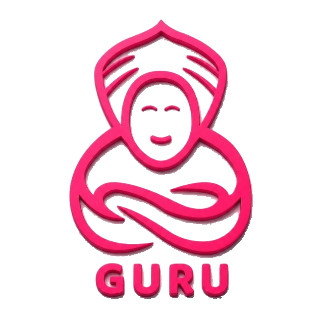

Onboarding Automatizado
Diseña flujos de aprendizaje interactivos para nuevos ingresos. El sistema genera de forma autónoma los módulos educativos basados en tus documentos reales.

ContáctanosConvierte la experiencia de tu equipo en un activo permanente. Automatiza el onboarding de personal, reduce la curva de aprendizaje y elimina el riesgo por fuga de talentos.
Líderes de gestión humana en empresas de alto crecimiento confían en GURU para guiar a sus equipos:
Cómo GURU resuelve, de manera ágil, los problemas reales que enfrentan las áreas de Recursos Humanos.
Onboardings eternos y repetitivos: los líderes de área pierden valiosas horas de trabajo repitiendo los mismos procesos de inducción una y otra vez ante cada nuevo ingreso.
Inducción instantánea y autónoma: los nuevos empleados acceden a rutas guiadas de conocimiento estructurado que se completan con total autonomía.
Fuga de conocimiento (Brain Drain): cuando un colaborador clave renuncia, toda su experiencia, métodos y conocimientos clave se marchan con él.
Activo intelectual permanente: GURU captura la esencia de los roles de manera dinámica e interactiva antes de que la persona deje la empresa.
Manuales obsoletos que nadie lee: los PDFs de capacitación archivados en carpetas compartidas quedan desactualizados rápidamente y son difíciles de consultar.
Búsqueda e interacción dinámica: el conocimiento se fragmenta y organiza de forma interactiva para ser consultado exactamente en el momento de la necesidad.
Cuatro piezas que trabajan juntas para capturar, estructurar y transferir el conocimiento de tu equipo.
Diseña flujos de aprendizaje interactivos para nuevos ingresos. El sistema genera de forma autónoma los módulos educativos basados en tus documentos reales.
Crea y mantiene actualizadas las guías de funciones de cada puesto en un formato interactivo. Olvídate de redactar pesados manuales de cientos de páginas.
Permite que tu equipo acceda a guías de solución de problemas internos de manera instantánea, sin saturar de preguntas a los líderes técnicos del equipo.
Un proceso guiado de salida que asiste al empleado saliente a vaciar y estructurar su rutina diaria y pendientes de forma rápida y efectiva.
Sube tus notas desordenadas, audios, antiguos PDFs, videos de Zoom o grabaciones operativas de tu equipo.
La plataforma clasifica, organiza y estructura de manera lógica toda la información, convirtiéndola en guías interactivas de lectura ágil.
Los miembros del equipo acceden a los módulos, completan sus entrenamientos y consultan dudas de manera fluida y autogestionada.
Nos encantará contactarte para hablar de GURU. Te respondemos en menos de 24 horas.